2.3. Modifying Text with Regular ExpressionsSo far, the examples have centered on finding, and at times, "plucking out" information from a string. Now we look at substitution (also called search and replace), a regex feature that Perl and many tools offer. As we have seen, $var =~ m/regex/ attempts to match the given regular expression to the text in the given variable, and returns true or false appropriately. The similar construct $var =~ s/regex/replacement/ takes it a step further: if the regex is able to match somewhere in the string held by $var, the text actually matched is replaced by replacement. The regex is the same as with m/⋯/, but the replacement (between the middle and final slash) is treated as a double-quoted string. This means that you can include references to variables, including $1, $2, and so on to refer to parts of what was just matched. Thus, with $var =~ s/⋯/⋯/ the value of the variable is actually changed. (If there is no match to begin with, no replacement is made and the variable is left unchanged.) For example, if $var contained Jeff•Friedl and we ran
$var =~ s/Jeff/Jeffrey/;
$var would end up with Jeffrey•Friedl. And if we did that again, it would end up with Jeffreyrey•Friedl. To avoid that, perhaps we should use a word-boundary metacharacter. As mentioned in the first chapter, some versions of egrep support
$var =~ s/\bJeff\b/Jeffrey/;
Here's a slightly tricky quiz: like m/⋯/, the s/⋯/⋯/ operation can use modifiers, such as the /i from page 47. (The modifier goes after the replacement.) Practically speaking, what does
$var =~ s/\bJeff\b/Jeff/i;
accomplish? ❖ Flip the page to check your answer. 2.3.1. Example: Form LetterLet's look at a rather humorous example that shows the use of a variable in the replacement string. I can imagine a form-letter system that might use a letter template with markers for the parts that must be customized for each letter. Here's an example:
Dear =FIRST=,
You have been chosen to win a brand new =TRINKET=! Free!
Could you use another =TRINKET= in the =FAMILY= household?
Yes =SUCKER=, I bet you could! Just respond by.....
To process this for a particular recipient, you might have the program load:
$given = "Tom";
$family = "Cruise";
$wunderprize = "100% genuine faux diamond";
Once prepared, you could then "fill out the form" with:
$letter =~ s/=FIRST=/$given/g;
$letter =~ s/=FAMILY=/$family/g;
$letter =~ s/=SUCKER=/$given $family/g;
$letter =~ s/=TRINKET=/fabulous $wunderprize/g;
Each substitution's regex looks for a simple marker, and when found, replaces it with the text wanted in the final message. The replacement part is actually a Perl string in its own right, so it can reference variables, as each of these do. For example, the marked portion of 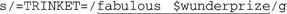 is interpreted just like the string "fabulous $wunderprize". If you just had the one letter to generate, you could forego using variables in the replacement string altogether, and just put the desired text directly. But, using this method makes automation possible, such as when reading names from a list. We haven't seen the /g "global replacement" modifier yet. It instructs the s/⋯/⋯/ to continue trying to find more matches, and make more replacements, after (and from where) the first substitution completes. This is needed if each string we check could contain multiple instances of the text to be replaced, and we want each substitution to replace them all, not just one. The results are predictable, but rather humorous:
2.3.2. Example: Prettifying a Stock PriceAs another example, consider a problem I faced while working on some stock-pricing software with Perl. I was getting prices that looked like "9.0500000037272". The price was obviously 9.05, but because of how a computer represents the number internally, Perl sometimes prints them this way unless special formatting is used. Normally, I would just use printf to display the price with exactly two decimal digits as I did in the temperature-conversion example, but that was not appropriate in this case. At the time, stock prices were still given as fractions, and a price that ended with, say, 1/8, should be shown with three decimals (".125"), not two.
I boiled down my needs to "always take the first two digits after the decimal point, and take the third digit only if it is not zero. Then, remove any other digits." The result is that 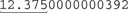 or the already correct 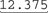 is returned as "12.375", yet 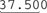 is reduced to "37.50". Just what I wanted. So, how would we implement this? The variable $price contains the string in question, so let's use:
$price =~ s/(\.\d\d[1-9]?)\d*/$1/
(Reminder: The initial Keep this example in mind, as we'll come back to it in Chapter 4 when looking at the important mechanics of just what goes on behind the scenes during a match. Some very interesting lessons can be learned by playing with this example. 2.3.3. Automated EditingI encountered another simple yet real-world example while working on this chapter. I was logged in to a machine across the Pacific, but the network was particularly slow. Just getting a response from hitting RETURN took more than a minute, but I needed to make a few small changes to a file to get an important program going. In fact, all I wanted to do was change every occurrence of sysread to read. There were only a few such changes to make, but with the slow response, the idea of starting up a full-screen editor was impractical. Here's all I did to make all the changes I needed:
% perl -p
-i
-e
's/sysread/read/g' file
This runs the Perl program s/sysread/read/g. (Yes, that's the whole programthe -e flag indicates that the entire program follows right there on the command line.) The -p flag results in the substitution being done for every line of the named file, and the -i flag causes any changes to be written back to the file when done. Note that there is no explicit target string for the substitute command to work on (that is, no $var =~ ⋯) because conveniently, the -p flag implicitly applies the program, in turn, to each line of the file. Also, because I used the /g modifier, I'm sure to replace multiple occurrences that might be in a line. Although I applied this to only one file, I could have easily listed multiple files on the command line and Perl would have applied my substitution to each line of each file. This way, I can do mass editing across a huge set of files, all with one simple command. The particular mechanics with which this was done are unique to Perl, but the moral of the story is that regular expressions as part of a scripting language can be very powerful, even in small doses. 2.3.4. A Small Mail UtilityLet's work on another example tool. Let's say we have an email message in a file, and we want to prepare a file for a reply. During the preparation, we want to quote the original message so we can easily insert our own reply to each part. We also want to remove unwanted lines from the header of the original message, as well as prepare the header of our own reply. The sidebar shows an example. The header has interesting fields date, subject, and so onbut also much that we are not interested in that we'll want to remove. If the script we're about to write is called mkreply, and the original message is in the file king.in, we would make the reply template with:
% perl -w mkreply king.in > king.out
(In case you've forgotten, the -w option enables extra Perl warnings ☞ 38.)
We want the resulting file, king.out, to contain something like:
Let's analyze this. To print out our new header, we need to know the destination address (in this case elvis@hh.tabloid.org, derived from the Reply-To field of the original), the recipient's real name (The King), our own address and name, as well as the subject. Additionally, to print out the introductory line for the message body, we need to know the message date. The work can be split into three phases:
I'm getting a bit ahead of myselfwe can't worry about processing the data until we determine how to read the data into the program. Fortunately, Perl makes this a breeze with the magic "<>" operator. This funny-looking construct gives you the next line of input when you assign from it to a normal $variable, as with "$variable = <>". The input comes from files listed after the Perl script on the command line (from king.in in the previous example). Don't confuse the two-character operator <> with the shell's "> filename" redirection or Perl's greater-than/less-than operators. It is just Perl's funny way to express a kind of a getline () function. Once all the input has been read, <> conveniently returns an undefined value (which is interpreted as a Boolean false), so an entire file can be processed with:
while ($line = < >) {
... work with $line here ...
}
We'll use something similar for our email processing, but the nature of email means we need to process the header specially. The header includes everything before the first blank line; the body of the message follows. To read only the header, we might use:
# Process the header
while ($line = < >) {
if ($line =~ m/^\s*$/) {
last; # stop processing within this while loop, continue below
}
... process header line here ...
}
... processing for the rest of the message follows ...
We check for the header-ending blank line with the expression
So, inside the loop, after the blank-line check, we can do whatever work we like with each header line. In this case, we need to extract information, such as the subject and date of the message. To pull out the subject, we can employ a popular technique we'll use often:
if ($line =~ m/^Subject: (.*)/i) {
$subject = $1;
}
This attempts to match a string beginning with 'Subject: •', having any capitalization. Once that much of the regex matches, the subsequent
Similarly, we can look for the Date and Reply-To fields:
if ($line =~ m/^Date: (.*)/i) {
$date = $1;
}
if ($line =~ m/^Reply-To: (.*)/i) {
$reply_address = $1;
}
The From: line involves a bit more work. First, we want the one that begins with 'From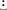', not the more cryptic first line that begins with 'From'. We want:
From: elvis@tabloid.org (The King)
It has the originating address, as well as the name of the sender in parentheses; our goal is to extract the name. To match up through the address, we can use So, putting this all together we get:
At first it might be a tad confusing with all those parentheses, so Figure 2-4 on the facing page shows it more clearly. Figure 2-4. Nested parentheses; $1, and $2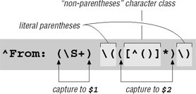When the regex from Figure 2-4 matches, we can access the sender's name as $2, and also have $1 as a possible return address:
if ($line =~ m/^From: (\s+) \(([^()]*)\)/i) {
$reply_address = $1;
$from_name = $2;
}
Since not all email messages come with a Reply-To header line, we use $1 as a provisional return address. If there turns out to be a Reply-To field later in the header, we'll overwrite $reply_address at that point. Putting this all together, we end up with:
while ($line = < >)
{
if ($line =~ m/^\s*$/ ) { # If we have an empty line...
last; # this immediately ends the 'while' loop.
}
if ($line =~ m/^Subject: (.*)/i) {
$subject = $1;
}
if ($line =~ m/^Date: (.*)/i) {
$date = $1;
}
if ($line =~ m/^Reply-To: (\s+)/i) {
$reply_address = $1;
}
if ($line =~ m/^From: (\s+) \(([^()]*)\)/i) {
$reply_address = $1;
$from_name = $2;
}
}
Each line of the header is checked against all the regular expressions, and if it matches one, some appropriate variable is set. Many header lines won't be matched by any of the regular expressions, and so end up being ignored. Once the while loop is done, we are ready to print out the reply header:[
print "To: $reply_address ($from_name)\n";
print "From: jfriedl\@regex.info (Jeffrey Friedl)\n";
print "Subject: Re: $subject\n";
print "\n" ; # blank line to separate the header from message body.
Notice how we add the Re: to the subject to informally indicate that it is a reply. Finally, after the header, we can introduce the body of the reply with:
print "On $date $from_name wrote:\n";
Now, for the rest of the input (the body of the message), we want to print each line with '|>•' prepended:
while ($line = < >) {
print "|> $line";
}
Here, we don't need to provide a newline because we know that $line contains one from the input. It is interesting to see that we can rewrite the code to prepend the quoting marker using a regex construct:
$line =~ s/^/|> /;
print $line;
The substitute searches for 2.3.4.1. Real-world problems, real-world solutionsIt's hard to present a real-world example without pointing out its real-world short-comings. First, as I have commented, the goal of these examples is to show regular expressions in action, and the use of Perl is simply a vehicle to do so. The Perl code I've used here is not necessarily the most efficient or even the best approach, but, hopefully, it clearly shows the regular expressions at work. Also, real-world email messages are far more complex than indicated by the simple problem addressed here. A From: line can appear in various different formats, only one of which our program can handle. If it doesn't match our pattern exactly, the $from_name variable never gets set, and so remains undefined (which is a kind of "no value" value) when we attempt to use it. The ideal fix would be to update the regex to handle all the different address/name formats, but as a first step, after checking the original message (and before printing the reply template), we can put:
if ( not defined($reply_address)
or not defined($from_name)
or not defined($subject)
or not defined($date) )
{
die "couldn't glean the required information!";
}
Perl's defined function indicates whether the variable has a value, while the die function issues an error message and exits the program. Another consideration is that our program assumes that the From: line appears before any Reply-To: line. If the From: line comes later, it overwrites the $reply_address we took from the Reply-To: line. 2.3.4.2. The "real" real worldEmail is produced by many different types of programs, each following their own idea of what they think the standard is, so email can be tricky to handle. As I discovered once while attempting to write some code in Pascal, it can be extremely difficult without regular expressions. So much so, in fact, that I found it easier to write a Perl-like regex package in Pascal than attempt to do everything in raw Pascal! I had taken the power and flexibility of regular expressions for granted until I entered a world without them. I certainly didn't want to stay in that world long. 2.3.5. Adding Commas to a Number with LookaroundPresenting large numbers with commas often makes reports more readable. Something like
print "The US population
is $pop\n";
might print out "The US population is 298444215," but it would look more natural to most English speakers to use "298,444,215" instead. How might we use a regular expression to help? Well, when we insert commas mentally, we count sets of digits by threes from the right, and insert commas at each point where there are still digits to the left. It'd be nice if we could apply this natural process directly with a regular expression, but regular expressions generally work left-to-right. However, if we distill the idea of where commas should be inserted as "locations having digits on the right in exact sets of three, and at least some digits on the left," we can solve this problem easily using a set of relatively new regex features collectively called lookaround. Lookaround constructs are similar to word-boundary metacharacters like One type of lookaround, called lookahead, peeks forward in the text (toward the right) to see if its subexpression can match, and is successful as a regex component if it can. Positive lookahead is specified with the special sequence 2.3.5.1. Lookaround doesn't "consume" textAn important thing to understand about lookahead and other lookaround constructs is that although they go through the motions to see if their subexpression is able to match, they don't actually "consume" any text. That may be a bit confusing, so let me give an example. The regex
⋯by but the same regex within lookahead,
⋯by Lookahead uses its subexpression to check the text, but only to find a location in the text at which it can be matched, not the actual text it matches. But, combining it with something that does match text, such as
⋯by just like
⋯ by Thomas Jefferson
By itself, It might be insightful to realize that It's also interesting to realize that the order in which they're combined is very important. Figure 2-5. How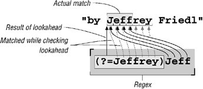
|
Solution | Comments |
|---|---|
s/\bJeffs\b/Jeff's/g | The simplest, most straightforward, and efficient solution; the one I'd use if I weren't trying to show other interesting ways to approach the same problem. Without lookaround, the regex "consumes" the entire 'Jeffs'. |
s/\b(Jeff)(s)\b/$1'$2/g | Complex without benefit. Still consumes entire'Jeffs'. |
s/\bJeff(?=s\b)/Jeff'/g | Doesn't actually consume the 's', but this not of much practical value here except to illustrate lookahead. |
s/(?<=\bJeff)(?=s\b)/'/g | This regex doesn't actually "consume" any text. It uses both lookahead and lookbehind to match positions of interest, at which an apostrophe is inserted. Very useful to illustrate lookaround. |
s/(?=s\b)(?<=\bJeff)/'/g | This is exactly the same as the one above, but the two lookaround tests are reversed. Because the tests don't consume text, the order in which they're applied makes no difference to whether there's a match. |
Before moving back to the adding-commas-to-numbers example, let me ask one question about these expressions. If I wanted to find "Jeffs" in a case-insensitive manner, but preserve the original case after the conversion, which of the expressions could I add /i to and have it work properly? I'll give you a hint: it won't work properly with two of them.❖ Think about which oneswould work, and why, and then turn the page to check your answer.
Quiz Answer❖ Answer to the question on page 63 What does s/(?=s\b)(?<=\bJeff)/'/g do? In this case, it doesn't matter which order It's fine for now to use the somewhat vague phrase "combination of the two" to talk about this, as the meaning is fairly intuitive in this case. There are times, however, when exactly how a regex engine goes about applying a regex may not necessarily be quite so intuitive. Since how it works has immediate practical effects on what our regular expressions really mean, Chapter 4 discusses this in explicit detail. |
You've probably already realized that the connection between the "Jeffs" example and the comma example lies in our wanting to insert something at a location that we can describe with a regular expression.
Earlier, we realized that we wanted to insert commas at "locations having digits on the right in exact sets of three, and at least some digits on the left." The second requirement is simple enough with lookbehind. One digit on the left is enough to fulfill the "some digits on the left" requirement, and that's  (?<=\d)
(?<=\d) .
.
Now for "locations having digits on the right in exact sets of three." An exact set of three digits is \d\d\d, of course. We can wrap it with (⋯)+ to allow more than one (the "sets" of our requirement), and append $ to ensure that nothing follows (the "exact" of our requirement). Alone, (\d\d\d)+$ matches sets of triple digits to the end of the string, but when inserted into the (?=⋯) lookahead construct, it matches at locations that are even sets of triple digits from the end of the string, such as at the marked locations in ' 123456789'. That's actually more than we want we don't want to put a comma before the first digitso we add (?<=\d) to further limit the match locations.
123456789'. That's actually more than we want we don't want to put a comma before the first digitso we add (?<=\d) to further limit the match locations.
This snippet:
$pop =~ s/(?<=\d)(?=(\d\d\d)+$)/,/g;
print "The US population is $pop\n";
indeed prints "The US population is 298,444,215" as we desire. It might, however, seem a bit odd that the parentheses surrounding \d\d\d are capturing parentheses. Here, we use them only for grouping, to apply the plus to the set of three digits, and so don't need their capture-to-$1 functionality.
I could have used (?:⋯), the non-capturing parentheses introduced in the sidebar on page 45. This would leave the regex as (?<=\d)(?=(?:\d\d\d)+$). This is "better" in that it's more specificsomeone reading this later won't have to wonder if or where the $1 associated with capturing parentheses might be used. It's also just a bit more efficient, since the engine doesn't have to bother remembering the captured text. On the other hand, even with (⋯) the expression can be a bit confusing to read, and with (?:⋯) even more so, so I chose the clearer presentation this time. These are common tradeoffs one faces when writing regular expressions. Personally, I like to use (?:⋯) everywhere it naturally applies (such as this example), but opt for clarity when trying to illustrate other points (as is usually the case in this book).
Let's say that we wanted to extend the use of this expression to commafying numbers that might be included within a larger string. For example:
$text = "The population of 298444215 is growing";
 $text =~ s/(?<=\d)(?=(\d\d\d)+$)/,/g;
print "$text\n";
$text =~ s/(?<=\d)(?=(\d\d\d)+$)/,/g;
print "$text\n";
As it stands, this doesn't work because the $ requires that the sets of three digits line up with the end of the string. We can't just remove it, since that would have it insert a comma everywhere that there was a digit on the left, and at least three digits on the rightwe'd end up with " ... of 2,9,8,4,4,4,215 is ..."!
It might seem odd at first, but we could replace $ with something to match a word boundary, \b.
Even though we're dealing with numbers only, Perl's concept of "words" helps us out. As indicated by \w
(☞ 49), Perl and most other programs consider alphanumerics and underscore to be part of a word. Thus, any location with those on one side (such as our number) and not those on the other side (e.g., the end of the line, or the space after a number) is a word boundary.
This "such-and-such on one side, and this-and-that on the other" certainly sounds familiar, doesn't it? It's exactly what we did in the "Jeffs" example. One difference here is that one side must not match something. It turns out that what we've so far been calling lookahead and lookbehind should really be called positive lookahead and positive lookbehind, since they are successful at positions where their subexpression is able to match. As Table 2-2 shows, their converse, negative lookahead and negative lookbehind, are also available. As their name implies, they are successful as positions where their subexpression is not able to match.
Quiz Answer❖ Answer to the question on page 64 Which "Jeffs" solutions would preserve case when applied with /i? To preserve case, you've got to either replace the exact characters consumed (rather than just always inserting 'Jeff's'), or not consume any letters. The second solution listed in Table 2-1 takes the first approach, capturing what is consumed and using $1 and $2 to put it back. The last two solutions in the table take the "don't consume anything" approach. Since they don't consume text, they have nothing to preserve. The first and third solutions hard-code the replacement string. If applied with /i, they don't preserve case. They end up incorrectly replacing JEFFS with Jeff's and Jeff'S, respectively. |
Type | Regex | Successful if the enclosed subexpression ... |
|---|---|---|
Positive Lookbehind | (?<=......) | successful if can match to the left |
Negative Lookbehind | (?<!......) | successful if can not match to the left |
Positive Lookahead | (?=......) | successful if can match to the right |
Negative Lookahead | (?!......) | successful if can not match to the right |
So, if a word boundary is a position with \w on one side and not \w on the other, we can use (?<!\w)(?=\w) as a start-of-word boundary, and its complement (?<=\w)(?!\w) as an end-of-word boundary. Putting them together, we could use (?<!\w)(?=\w)|(?<=\w)(?!\w) as a replacement for \b. In practice, it would be silly to do this for languages that natively support \b (\b is much more direct and efficient), but the individual alternatives may indeed be useful (☞ 134).
For our comma problem, though, we really need only (?!\d) to cap our sets of three digits. We use that instead of \b or $, which leaves us with:
$text =~ s/(?<=\d)(?=(\d\d\d)+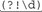)/,/g;
This now works on text like " ... tone of 12345Hz," which is good, but unfortunately it also matches the year in " ... the 1970s ..." Actually, any of these match " ... in 1970 ...," which is not good. There's no substitute for knowing the data you intend to apply a regex to, and knowing when that application is appropriate (and if your data has year numbers, this regex is probably not appropriate).
Throughout this discussion of boundaries and what we don't want to match, we used negative lookahead, (?!\w) or (?!\d). You might remember the "something not a digit" metacharacter \D from page 49 and think that perhaps this could be used instead of (?!\d). That would be a mistake. Remember, in !\D's meaning of "something not a digit," something is required, just something that's not a digit. If there's nothing in the text being searched after the digit, \D can't match. (We saw something similar to this back in the sidebar on page 12.)
Lookbehind is not as widely supported (nor as widely used) as lookahead. Lookahead support was introduced to the world of regular expressions years before lookbehind, and though Perl now has both, this is not yet true for many languages. Therefore, it might be instructive to consider how to solve the commafication problem without lookbehind. Consider:
$text =~ s/(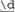)(?=(\d\d\d)+(?!\d))/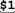,/g;
The change from the previous example is that the positive lookbehind that had been wrapped around the leading \d has been replaced by capturing parentheses, and the corresponding $1 has been inserted into the replacement string, just before the comma.
What about if we don't have lookahead either? We can put the \b back for the (?!\d), but does the technique used to eliminate the lookbehind also work for the remaining lookahead? That is, does the following work?
$text =~ s/(\d)((\d\d\d)+\b)/$1,$2/g;
❖ Turn the page to check your answer.
Let's write a little tool to convert plain text to HTML. It's difficult to write a general tool that's useful for every situation, so for this section we'll just write a simple tool whose main goal is to be a teaching vehicle.
In all our examples to this point, we've applied regular expressions to variables containing exactly one line of text. For this project, it is easier (and more interesting) if we have the entire text we wish to convert available as one big string. In Perl, we can easily do this with:
undef $/; # Enter "file-slurp" mode.
$text = <>; # Slurp up the first file given on the command line.
Quiz Answer❖ Answer to the question on page 67 Does $text =~ s/(\d)((\d\d\d)+\b)/$1,$2/g "commafy" a number? This won't work the way we want. It leaves results such as "281,421906." This is because the digits matched by When one iteration ends, the next picks up the inspection of the text at the point where the previous match ended. We'd like that to be the point where the comma was inserted so we can go ahead and check to see whether additional commas need to be inserted later in the same number. But, in this case, that restarting point is at the end of all the digits. The whole point of using lookahead was to get the positional check without actually having the inspected text check count toward the final "string that matched." Actually, this expression can still be used to solve this problem. If the expression is applied repeatedly by the host language, such as via a while loop, the newly-modified text is completely revisited each time. With each such application, one more comma is added (to each number in the target string, due to the /g modifier). Here's an example:
while ( $text =~ s/(\d)((\d\d\d)+\b)/$1,$2/g ) {
# Nothing to do inside the body of the while -- we merely want to reapply the
regex until it fails
}
|
If our sample file contains the three short lines
This is a sample file.
It has three lines.
That's all
the variable $text will then contain
This is a sample file. It has three lines. That's all
It has three lines. That's all
although depending on the system, it could instead be
This is a sample file. 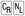It has three lines. That's all
since most systems use a newline to end lines, but some (most notably Windows)use a carriage-return/newline combination. We'll be sure that our simple tool works with either.
Our first step is to make any '&', '<', and '>' characters in the original text "safe" by converting them to their proper HTML encodings, '&', '<', and '>' respectively. Those characters are special to HTML, and not encoding them properly can cause display problems. I call this simple conversion "cooking the text for HTML," and it's fairly simple:
$text =~ s/&/&/g; # Make the basic HTML ...
$text =~ s/</</g; # ... characters &, <, and > ...
$text =~ s/>/>/g; # ... HTML safe.
Here again, we're using /g so that all of target characters will be converted (as opposed to just the first of each in the string if we didn't use /g). It's important to convert & first, since all three have '&' in the replacement.
Next, we'll mark paragraphs by separating them with the <p> paragraph-separator HTML tag. An easy way to identify paragraphs is to consider them separated by blank lines. There are a number of ways that we might try to identify a blank line.
At first you might be tempted to use
$text =~ s/^$/<p>/g;
to match a "start-of-line position followed immediately by an end-of-line position. "Indeed, as we saw in the answer on page 10, this would work in a tool like egrep where the text being searched is always considered in chunks containing a single logical line. It would also work in Perl in the context of the earlier email example where we knew that each string contained exactly one logical line.
But, as I mentioned in the footnote on page 55, ^ and $ normally refer not to logical line positions, but to the absolute start- and end-of-string positions.[ ] So, now that we have multiple logical lines embedded within our target string, we need to do something different.
] So, now that we have multiple logical lines embedded within our target string, we need to do something different.
[
Luckily, most regex-endowed languages give us an easy solution, an enhanced line anchor match mode in which the meaning of ^ and $ to change from string related to the logical-line related meaning we need for this example. With Perl, this mode is specified with the /m modifier:
$text =~ s/^$/<p>/mg;
Notice how /m and /g have been combined. (When using multiple modifiers, you can combine them in any order.) We'll see how other languages handle modifiers in the next chapter.
Thus, if we start with '⋯chapter.
 Thus⋯' in $text, we will end up with '⋯chapter.
Thus⋯' in $text, we will end up with '⋯chapter.  <p>
<p>  Thus⋯' as we want.
Thus⋯' as we want.
It won't work, however, if there are spaces or other whitespace on the "blank" line. To allow for spaces, we can use ^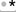$, or perhaps ^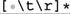$ to allow for spaces, tabs, and the carriage return that some systems have before the line-ending newline. These are fundamentally different from ^$ alone in that these now match actual characters, while ^$ matches only a position. But, since we don't need those spaces, tabs, and carriage returns in this case, it's fine to match them (and then replace them with our paragraph tag).
If you remember \s from page 47, you might be inclined to use 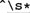$, just as we did in the email example on page 55. If we use \s instead of [•\t\r], the fact that \s can match a newline means that the overall meaning changes from "find lines that are blank except for whitespace" to "find spans of lines that are blank except for whitespace." This means that if we have several blank lines in a row, ^\s*$ is able to match them all in one shot. The fortunate result is that the replacement leaves just one <p> instead of the several in a row we would otherwise end up with.
Therefore, if we have the string
⋯ with.
 • Therefore ⋯
• Therefore ⋯
in the variable $text, and we use
$text =~ s/^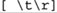*$/<p>/mg;
we'll end up with:
⋯ with. 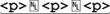 Therefore ...
But, if we use
$text =~ s/^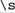*$/<p>/mg;
we'll end up instead with the more desirable:
⋯ with.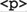 Therefore ⋯
So, we'll stick with ^\s*$ in our final program.
The next step in our text-to-HTML converter is to recognize an email address, and turn it into a "mailto" link. This would convert something like "jfriedl@oreilly.com" to <a • href="mailto:jfriedl@oreilly.com">jfriedl@oreilly.com</a>.
It's a common desire to match or validate an email address with a regular expression. The official address specification is quite complex, so to do it exactly is difficult, but we can use something less complex that works for most email addresses we might run into. The basic form of an email address is "username@hostname". Before looking at just what regular expression to use for each of those parts, let's look at the context we'll use them in:
$text =~ s/\b(username regex\@hostname regex)\b/<a href="mailto:$1">$1<\/a>/g;
The first things to notice are the two marked backslash characters, one in the regex ('\@') and one toward the end of the replacement string. Each is there for a different reason. I'll defer the discussion of \@ until a bit later (☞ 77), for the moment merely saying that Perl requires @ symbols to be escaped when used in a regex literal.
The backslash before the '/' in the replacement string is a bit more useful to talk about at the moment. We've seen that the basic form of a Perl search and replace is s/regex/replacement/modifiers, with the forward slashes delimiting the parts. Now, if we wish to include a forward slash within one of the parts, Perl requires us to escape it to indicate that it should not be taken as a delimiter, but rather included as part of the regex or replacement string. This means that we would need to use <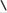/a> if we wish to get </a> into the replacement string, which is just what we did here.
This works, but it's a little ugly, so Perl allows us to pick our own delimiters. For instance, s!regex!string!modifiers or s{regex}{string}modifiers. With either, since the slash in the replacement string no longer conflicts with the delimiter, it no longer needs to be escaped. The delimiters for the regex and string parts pair up nicely in the second example, so I'll use that form from now on.
Returning to the code snippet, notice how the entire address part is wrapped in \b⋯\b. Adding these word boundaries help to avoid an embedded match like in '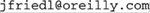piler'. Although running into a nonsensical string like that is probably rare, it's simple enough to use the word boundaries to guard against matching it when we do, so I use them. Notice also that the entire address part is wrapped in parentheses. These are to capture the matched address, making it available to the replacement string '<a•href="mailto:$1">$1</a>'.
Now we turn our attention to actually matching an email address by building those username and hostname regular expressions. Hostnames, like regex.info and www.oreilly.com, consist of dot-separated parts ending with 'com', 'edu', 'info', 'uk', or other selected sequences. A simplistic approach to matching an email address could be \w+\@\w+(\.\w+)+, which allows \w+ for the username and the same for each part of the hostname. In practice, though, you'll need something a little more specific. For usernames, you'll run into some with periods and dashes in them (although rarely does a username start with one of these). So, rather than \w+, we'll try \w[-.\w]*. This requires the name to start with a \w character, but then allows periods and dashes as well. (Notice how we are sure to put the dash first in the class, to ensure that it's taken as a literal dash, and not the part of an a-z type of range? With many flavors, a range like .-\w is almost certainly wrong, yielding a fairly random set of letters, numbers, and punctuation that's dependent on the program and the computer's native character encoding. Perl handles .-\w in a class just fine, but being careful with dash in a class is a good habit to get into.)
The hostname part is a bit more complex in that the dots are strictly separators, which means that there must be something in between for them to separate. This is why even in the simplistic version earlier, the hostname part uses \w+(\.\w+)+ instead of [\w.]+. The latter incorrectly matches '..x..'. But, even the former matches in 'Artichokes 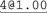', so we still need to be more specific.
One approach is to specifically list what the last component can be, along the lines of \w+(\.\w+)*\.(com|edu|info). (That list of alternatives really should be com|edu|gov|int|mil|net|org|biz|info|name|museum|coop|aero|[a-z][a-z], but I'll use the shorter list to keep the example uncluttered.) This allows a leading \w+ part, along with optional additional \.\w+ parts, finally followed by one of the specific ending parts we've listed.
Actually, \w is not quite appropriate. It allows ASCII letters and digits, which is good, but with some systems may allow non-ASCII letters such as á, ç, Ξ, Æ, and with most flavors, an underscore as well. None of these extra characters are allowed in a hostname. So, we probably should use [a-zA-Z0-9], or perhaps [a-z0-9] with the /i modifier (for a case-insensitive match). Hostnames can also have a dash as well, so we'll use [-a-z0-9] (again, being careful to put the dash first). This leaves us with [-a-z0-9]+(\.[-a-z0-9]+)*\.(com|edu|info) for the hostname part.
As with all regex examples, it's important to remember the context in which they will be used. By itself, [-a-z0-9]+(\.[-a-z0-9]+)*\.(com|edu|info) could match, say 'run C:\\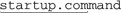 at startup', but once we drop it into the context of our program, we'll be sure that it matches where we want, and not where we don't. In fact, I'd like to drop it right into the
$text =~ s{\b(username regex\@hostname regex)\b}{<a href="mailto:$1">$1
</a>}gi;
form mentioned earlier (updated here with the s{⋯}{⋯} delimiters, and the /i modifier), but there's no way I could get it to fit onto the page. Perl, of course, doesn't care if it fits nicely or looks pretty, but I do. That's why I'll now introduce the /x modifier, which allows us to rewrite that regex as:
$text =~ s{
\b
# Capture the address to $1 ...
(
username regex
\@
hostname regex
)
\b
}{<a href="mailto:$1">$1</a>}gi;
Wow, that's different! The /x modifier appears at the end of that snippet (along with the /g and /i modifiers), and does two simple but powerful things for the regular expression. First, it causes most whitespace to be ignored, so you can "free-format" the expression for readability. Secondly, it allows comments with a leading #.
Specifically, /x turns most whitespace into an "ignore me" metacharacter, and # into an "ignore me, and everything else up to the next newline" metacharacter (☞ 111). They aren't taken as metacharacters within a character class (which means that classes are not free-format, even with /x), and as with other metacharacters, you can escape whitespace and # that you want to be taken literally. Of course, you can always use \s to match whitespace, as in m/<a \s+ href=⋯>/x.
Realize that /x applies only to the regular expression, and not to the replacement string. Also, even though we've now switched to using the s{⋯}{⋯} form, where the modifiers come after the final '}' (e.g., '}x'), in conversation we still refer to "the x modifier" as "/x".
Well, now we can drop in our username and hostname parts, combined with what we developed earlier, to leave us with the program so far:
undef $/; # Enter "file-slurp" mode.
$text =<>; # Slurp up the first file given on the command line.
$text =~ s/&/&/g; # Make the basic HTML ...
$text =~ s/</</g; # ... characters &, <, and > ...
$text =~ s/>/>/g; # ... HTML safe.
$text =~ s/^\s*$/<p>/mg; # Separate paragraphs.
# Turn email addresses into links ...
$text =~ s{
\b
# Capture the address to $1 ...
(
\w[-.\w]* # username
\@
[-a-z0-9]+(\.[-a-z0-9]+)+\.(com;edu;info) # hostname
)
\b
}{<a href="mailto:$1">$1</a>}gix;
print $text; # Finally, display the HTML-ized text.
All the regular expressions work with the same multiline string, but notice that only the expression to separate paragraphs requires the /m modifier, since only that expression has ^ or $. Using /m on the others wouldn't hurt (well, except to make the reader wonder why it was there).
Finally, let's turn our attention to recognizing a normal HTTP URL, turning it into a link to itself. This would convert something like "http://www.yahoo.com/" to
<a•href="http://www.yahoo.com/">http://www.yahoo.com/</a>.
The basic form of an HTTP URL is "http://hostname/path", where the /path part is optional. This gives us a form of:
$text =~ s{
\b
# Capture the URL to $1 ...
(
http:// hostname
(
/ path
)?
)
}{<a href="$1">$1</a>}gix;
For the hostname part, we can use the same subexpression we used for the email address. The path part of a URL can consist of a variety of characters, and in the previous chapter we used [-a-z0-9_:@&?=+,.!/~*'%$]* (☞25), which is most ASCII characters except whitespace, control characters, and things like <> (){}.
There's one other thing we must do before using it with Perl, and that's escape the @ and $ characters. Again, I'll defer on the explanation until a bit later (☞ 77).
Now, let's plug in our hostname and path parts:
$text =~ s{
\b
# Capture the URL to $1 ...
(
http:// [-a-z0-9]+(\.[-a-z0-9]+)*\.(com|edu|info) \b # hostname
(
/ [-a-z0-9_:\@&?=+,.!/~*'%\$]* # optional path
)?
)
}{<a href="$1">$1</a>}gix;
You'll notice that there's no \b after the path, since it's perfectly allowable for a URL to end with punctuation, such as the URL for O'Reilly's page on this book:
http://www.oreilly.com/catalog/regex3/
Using \b at the end would disallow a URL ending this way.
That being said, in practice we probably want to put some artificial restrictions on what the URL can end with. Consider the following text:
Read "odd" news at 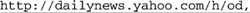 and
maybe some tech stuff at 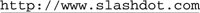!
Our current regex matches the marked text, although it's obvious that the trailing punctuation in each really shouldn't be part of the URL. When trying to match URLs embedded in English text, it seems to make sense to not include an ending [.,?!] as part of the URL. (This isn't part of any standard, but just a heuristic I've come up with that seems to work most of the time.) Well, that's as easy as adding a "can't be any of [.,?!]" negative lookbehind, (?<![.,?!]), to the end of the path part. The effect is that after we've matched what we intend to take as the URL, the lookbehind peeks back to ensure that the last character is appropriate. If not, the engine must reevaluate what's taken as the URL so that this final condition is fulfilled. That means it's forced to leave off the offending punctuation so the final lookbehind can match. (We'll see a different way to solve this problem in Chapter 5 ☞ 206.)
Inserting this, we can now try the full program:
undef $/; # Enter "file-slurp" mode
$text = <>; # Slurp up the first file given on the command line.
$text =~ s/&/&/g; # Make the basic HTML ...
$text =~ s/</</g; # ... characters &, <, and > ...
$text =~ s/>/>/g; # ... HTML safe.
$text =~ s/^\s*$/<p>/mg; # Separate paragraphs.
# Turn email addresses into links ...
$text =~ s{
\b
# Capture the address to $1 ...
(
\w[-.\w]* # username
\@
[-a-z0-9]+(\.[-a-z0-9]+)*\.(com;edu;info) # hostname
)
\b
}{<a href="mailto:$1">$1</a>}gix;
# Turn HTTP URLs into links ...
$text =~ s{
\b
# Capture the URL to $1 ...
(
http:// [-a-z0-9]+(\.[-a-z0-9]+)*\.(com|edu|info) \b # hostname
(
/ [-a-z0-9_:\@&?=+,.!/~*'%\$]* # Optional path
(?<![.,?!]) # Not allowed to end with [.,?!]
)?
)
}{<a href="$1">$1</a>}gix;
print $text; # Finally, display the HTML-ized text.
Note that the same expression is used for each of the two hostnames, which means that if we ever update one, we have to be sure to update the other. Rather than keeping that potential source of confusion, consider the three instances of $HostnameRegex in this modified snippet from our program:
$HostnameRegex = qr/[-a-z0-9]+(\.[-a-z0-9]+)*\.(com|edu|info)/i;
# Turn email addresses into links ...
$text =~ s{
\b
# Capture the address to $1 ...
(
\w[-.\w]* # username
\@
$HostnameRegex # hostname
)
\b
}{<a href="mailto:$1">$1</a>}gix;
# Turn HTTP URLs into links ...
$text =~ s{
\b
# Capture the URL to $1 ...
(
http:// $HostnameRegex \b # hostname
(
/ [-a-z0-9_:\@&?=+,.!/~*'%\$]*
# Optional path
(?<![.,?!]) # not
allowed to end with [.,?!]
)?
)
}{<a href="$1">$1</a>}gix;
The first line introduces Perl's qr operator. It's similar to the m and s operators in that it takes a regular expression (i.e., used as qr/⋯/, just like m/⋯/ and s/⋯/⋯/), but rather than immediately applying it to some text in search of a match, it converts the regex provided into a regex object, which you can save to a variable. Later, you can use that object in place of a regular expression, or even as a subexpression of some other regex (as we've done here, using the regex object assigned to $HostnameRegex as part of the regex of the two substitutions). This is very convenient because it makes things clearer. As a bonus, we then need only one "master source" to specify the regex to match a hostname, which we can then use as often as we like. There are additional examples of building this type of "regex library" in Chapter 6 (☞ 277), and a detailed discussion in Chapter 7 (☞ 303).
Other languages offer ways to create their own regex objects; several languages are explored briefly in the next chapter, with Java and .NET discussed in detail in Chapter 8 and Chapter 9.
You'll notice that the same '$' is used as both the end-of-string metacharacter, and to request interpolation (inclusion) of a variable. Normally, there's no ambiguity to what '$' means, but within a character class it getsa bit tricky. Since it can't possibly mean end-of-string within a class, in that situation Perl considers it a request to interpolate (include from) a variable, unless it's escaped. If escaped, the '$' is just included as a member of the class. That's what we want this time, so that's why we have to escape the dollar sign in the path part of the URL-matching regex.
It's somewhat similar for @. Perl uses @ at the beginning of array names, and Perl string or regex literals allow arrays to be interpolated. If we wish a literal @ to be part of a regex, we must escape it so that it's not taken as an array interpolation.
Some languages don't allow variable interpolation (Java, VB.NET, C, C#, Emacs, and awk, for instance). Some do allow variable interpolation (including Perl, PHP, Python, Ruby, and Tcl), but each has their own way to do it. This is discussed further in the next chapter (☞ 101).
The doubled-word problem in Chapter 1 hopefully whetted your appetite for the power of regular expressions. I teased you at the start of this chapter with a cryptic bunch of symbols I called a solution:
$/ = ".\n";
while (<>) {
next if !s/\b([a-z]+)((?:\s<<[^>]+>)+)(\1\b)/\e[7m$1\e[m$2\e[7m$3\e[m/ig;
s/^(?:[^\e]*\n)+//mg; # Remove any unmarked lines.
s/^/$ARGV: /mg; # Ensure lines begin with filename.
print;
}
Now that you've seen a bit of Perl, you hopefully understand at least the general formthe <>, the three s/⋯/⋯/, and the print. Still, it's rather heady stuff! If this chapter has been your only exposure to Perl (and these chapters your only exposure to regular expressions), this example is probably a bit beyond what you want to be getting into at this point.
However, when it comes down to it, I don't think the regex is really so difficult. Before looking at the program again, it might be good to review the specification found on page 1, and to see a sample run:
% perl -w FindDbl ch01.txt
ch01.txt: check for doubled words (such as 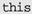 ), a common problem with
ch01.txt: * Find doubled words despite capitalization differences, such as with '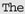
ch01.txt: 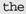⋯', as well as allow differing amounts of whitespace (space, tabs,
ch01.txt: /\<(1,000,000|million|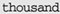 )/. But alternation can't be
ch01.txt: of this chapter. If you knew specific doubled word to find (such
Let's look at the program now, first in Perl. We'll then briefly look at a solution in Java to see a different approach for working with regular expressions. This time, the listing below uses the s{regex}{replacement}modifiers form of the substitution. It also uses the /x modifier to make the listing clearer (and with the extra room, now uses the more readable 'next unless' instead of 'next if !'). Otherwise, it is identical to the short version at the start of this chapter.
$/
= ".\n"; ❶# Sets a special "chunk-mode"; chunks end with a
period-newline combination
while (< >) ❷
{
next unless s{❸# (regex starts here)
### Need to match one word:
\b # Start of word ... .
( [a-z]+ ) # Grab word, filling $1 (and \1).
### Now need to allow any number of spaces and/or <TAGS>
( #Save what intervenes to $2.
(?: # (Non-capturing parens for grouping the alternation)
\s # Whitespace (includes newline, which is good).
| # -or-
<[^>]+> # Item like <TAG>.
)+ # Need at least one of the above, but allow more.
)
### Now match the first word again:
(\1\b) # \b ensures not embedded. This copy saved to $3.
#(regex ends here)
}
# Above is the regex. The replacement string is below, followed
by the modifiers, /i, /g, and /x
{\e[7m$1\e[m$2\e[7m$3\e[m}igx; ❹
s/^(?:[^\e]+\n)+//mg; ❺ # Remove any unmarked lines.
s/^/$ARGV: /mg; ❻ # Ensure lines begin with filename.
print;
}
This short program does use a fair number of things we haven't seen yet. Let me briefly explain it and some of the logic behind it, but I direct you to the Perl man page for details (or, if regex-related, to Chapter 7). In the description that follows, "magic" means "because of a feature of Perl that you may not be familiar with yet."
❶ Because the doubled-word problem must work even when the doubled words are split across lines, I can't use the normal line-by-line processing I used with the mail utility example. Setting the special variable $/ (yes, that's a variable) as shown puts the subsequent <> into a magic mode such that it returns not single lines, but more-or-less paragraph-sized chunks. The value returned is just one string, but a string that could potentially contain many of what we would consider to be logical lines.
❷ Did you notice that I don't assign the value from <> to anything? When used as the conditional of a while like this, <> magically assigns the string to a special default variable.[] That same variable holds the default string that s/⋯/⋯/ works on, and that print displays. Using these defaults makes the program less cluttered, but also less understandable to someone new to the language, so I recommend using explicit operands until you're comfortable.
[
❸ The next unless before the substitute command has Perl abort processing on the current string (to continue with the next) if the substitution doesn't actually do anything. There's no need to continue workingon a string in which no doubled words are found.
❹ The replacement string is really just "$1 $2 $3" with intervening ANSI escape sequences that provide highlighting to the two doubled words, but not to whatever separates them. These escape sequences are \e[7m to begin highlighting, and \e[m to end it. (\e is Perl's regex and string shorthand for the ASCII escape character, which begins these ANSI escape sequences.)
Looking at how the parentheses in the regex are laid out, you'll realize that "$1$2$3" represents exactly what was matched in the first place. So, other than adding in the escape sequences, this whole substitute command is essentially a (slow) no-op.
We know that $1 and $3 represent matches of the same word (the whole point of the program!), so I could probably get by with using just one or the other in the replacement. However, since they might differ in capitalization, I use both variables explicitly.
❺ The string may contain many logical lines, but once the substitution has marked all the doubled words, we want to keep only logical lines that have an escape character. Removing those that don't leaves only the lines of interest in the string. Since we used the enhanced line anchor match mode (the /m modifier) with this substitution, the regex ^([^\e]*\n)+ can find logical lines of non-escapes. Use of this regex in the substitute causes those sequences to be removed. The result is that only logical lines that have an escape remain, which means that only logical lines that have doubled words in them remain.[ ]
]
[
❻ The variable $ARGV magically provides the name of the input file. Combined with /m and /g, this substitution tacks the input filename to the beginning of each logical line remaining in the string. Cool!
Finally, the print spits out what's left of the string, escapes and all. The while loop repeats the same processing for all the strings (paragraph-sized chunks of text) that are read from the input.
As I emphasized earlier, I use Perl in this chapter as a tool to show the concepts. It happens to be a very useful tool, but I again want to stress that this problem can be easily solved with regular expressions in many other languages.
Still, showing the concepts is made a bit easier due to a Perl feature unique among advanced languages, which is that regular expressions are a "first class," low-level feature of the language. This means that there are basic operators that work with regular expressions in the same way that + and - work with numbers. This reduces the amount of "syntactic baggage" needed to wield regular expressions.
Most languages do not provide this. For reasons that are discussed in Chapter 3 (☞ 93), many modern languages instead provide functions or objects for manipulating and applying regular expressions. There might be a function, for example, that accepts a string to be interpreted as a regular expression, as well as text to be searched, and returns a true or false depending on whether the regular expression matches the text. More commonly, though, these two tasks (first, interpreting a string as a regular expression, and second, applying the regular expression to text) are broken up into two or more separate functions, as seen in the Java listing on the facing page. The code uses the java.util.regex package that comes standard as of Java 1.4.
You can see near the top the same three regular expressions we used in the Perl example, passed as strings to the three Pattern.compile routines. A direct comparison shows that the Java version has a few extra backslashes, but that's just a side effect of Java's requirement that regular expressions be provided as strings. Backslashes intended for the regular expression must be escaped to prevent Java's string parser from interpreting the backslashes in its own way (☞ 44).
You'll also notice that the regular expressions are located not in the main text-processing part of the program, but at the start, in the initialization section. The Pattern.compile function merely analyzes the string as a regular expression, and builds an internal "compiled version" that is assigned to a Pattern variable (regex1, etc.). Then, in the main text-processing part of the program, that compiled version is applied to text with regex1.matcher(text), the result of which is used to do the replacement. Again, we'll get into the details in the next chapter, but the point here is that when learning any regex-enabled language, there are two parts to the story: the regex flavor itself, and how the language lets you wield the regular expressions.
import java.io.*;
import java.util.regex.Pattern;
import java.util.regex.Matcher;
public class TwoWord
{
public static void main(String [] args)
{
Pattern regex1 = Pattern.compile(
"\\b([a-z]+)((?:\\s<\\<[^>]+\\>)+)(\\1\\b)",
Pattern.CASE_INSENSITIVE);
String replace1 = "\033[7m$1\033[m$2\033[7m$3\033[m";
Pattern regex2 = Pattern.compile("^(?:[^\\e]*\\n)+", Pattern.MULTILINE);
Pattern regex3 = Pattern.compile("^([^\\n]+)", Pattern.MULTILINE);
// For each command-line argument....
for (int i = 0; i < args.length; i++)
{
try {
BufferedReader in = new BufferedReader(new FileReader(args[i]));
String text;
// For each paragraph of each file.....
while ((text = getPara(in)) != null)
{
// Apply the three substitutions
text = regex1.matcher(text).replaceAll(replace1);
text = regex2.matcher(text).replaceAll("");
text = regex3.matcher(text).replaceAll(args[i] + ": $1");
// Display results
System.out.print(text);
}
} catch (IOException
e) {
System.err.println("can't read ["+args[i]+"]: " + e.getMessage());
}
}
}
// Routine to read next "paragraph" and return as a string
static String getPara(BufferedReader in) throws java.io.IOException
{
StringBuffer buf = new StringBuffer();
String line;
while ((line = in.readLine()) != null &&
(buf.length() == 0 ;; line.length() != 0))
{
buf.append(line + "\n");
}
return buf.length() == 0 ? null : buf.toString();
}
}